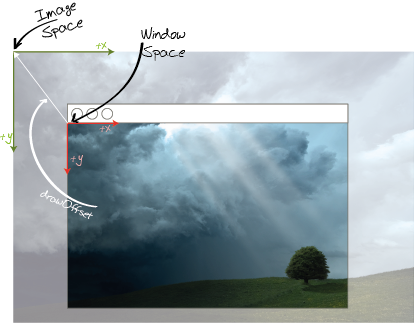

Uses of Package
gdi.game
Packages that use gdi.game
Package
Description
Classes that are needed to provide the most basic game-world infrastructure
All classes supporting the Dominion game
Classes supporting map-based games.
Classes supporting sprite-based games.
-
ClassDescriptionAn extension to the most basic game World.This Exception is generated whenever the state of the world became invalidThis class implements a simple mouse interaction to view only a given area of the underlying background image inherited from
ImageWorld.
When the window is smaller than the size returned byMoveableWorld.getWidth()andMoveableWorld.getHeight(), you can drag the visible area when moving your mouse while the right mouse button is pressed.

Since this behaviour introduces different coordinate spaces.This class can be used to manage several settings for the game world.The base class of a game.A class that helps managing Objects that need to reference a world. -
Classes in gdi.game used by gdi.game.dominionClassDescriptionA Basic class for all drawable and updatable Objects in the WorldA class that helps managing Objects that need to reference a world.
-
Classes in gdi.game used by gdi.game.mapClassDescriptionA Basic class for all drawable and updatable Objects in the WorldAn extension to the most basic game World.This class implements a simple mouse interaction to view only a given area of the underlying background image inherited from
ImageWorld.
When the window is smaller than the size returned byMoveableWorld.getWidth()andMoveableWorld.getHeight(), you can drag the visible area when moving your mouse while the right mouse button is pressed.
Since this behaviour introduces different coordinate spaces.This class can be used to manage several settings for the game world.The base class of a game.A class that helps managing Objects that need to reference a world. -
Classes in gdi.game used by gdi.game.spriteClassDescriptionA Basic class for all drawable and updatable Objects in the WorldAn extension to the most basic game World.This class implements a simple mouse interaction to view only a given area of the underlying background image inherited from
ImageWorld.
When the window is smaller than the size returned byMoveableWorld.getWidth()andMoveableWorld.getHeight(), you can drag the visible area when moving your mouse while the right mouse button is pressed.
Since this behaviour introduces different coordinate spaces.The base class of a game.A class that helps managing Objects that need to reference a world.